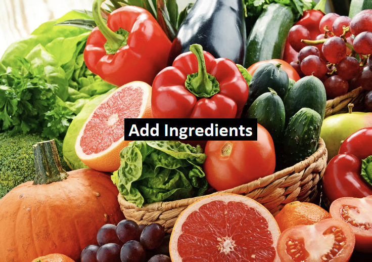

Recipes Found:
{{ recipe.title }}
Ingredients: {{ recipe.usedIngredientCount }} used, {{ recipe.missedIngredientCount }} missing
Ingredients: {{ recipe.usedIngredientCount }} used, {{ recipe.missedIngredientCount }} missing